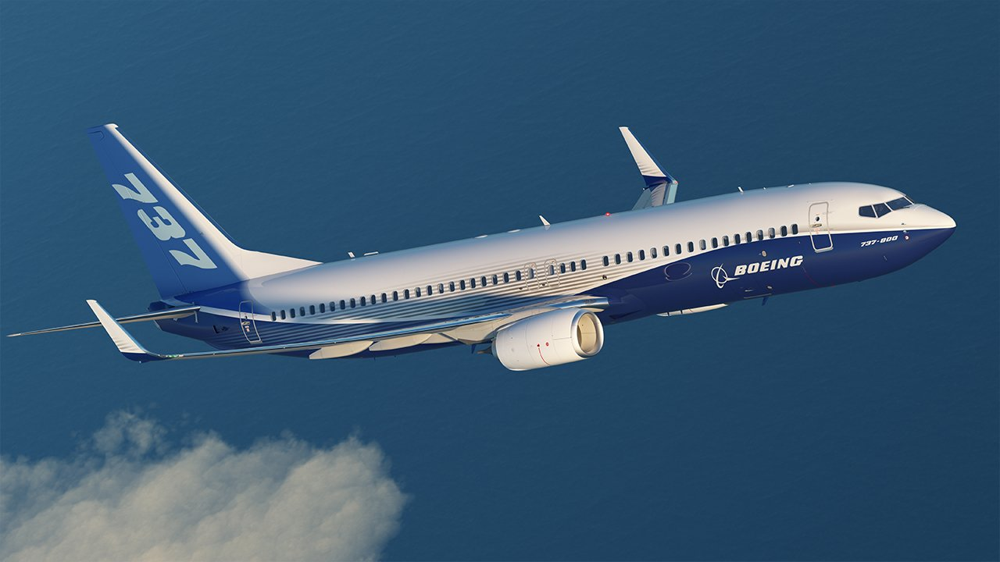

Boeing at Paris Air Show + VIDEO

PARIS - 19 June 2017: Boeing unveiled a new model of its best-selling 737 aircraft on Monday, injecting life into a faltering civil aviation market as French President Emmanuel Macron flew in to open the world's biggest airshow in Paris.
After years of booming orders driven by increased air travel and more fuel-efficient planes, passenger jetmakers are bracing for a slowdown in demand while they focus on meeting tight delivery schedules and ambitious production targets.
"The MAX 10 is going to add more value for customers and more energy to the marketplace" - Boeing Chief Executive Dennis Muilenburg said at a presentation ceremony.
Another important presentation was the program that the have made for virtual reality.
Read moreBoeing Next-Generation 737 + SONGS & MAP
Boeing presents the Next-Generation 737.In 1991 Boeing initiated development of an updated series of aircraft. After working with potential customers, the 737 Next Generation (NG) program was announced on November 17, 1993. The 737NG encompasses the −600, −700, −800 and −900 variants, and is to date the most significant upgrade of the airframe. The performance of the 737NG is essentially that of a new airplane, but important commonality is retained from previous 737 generations. The wing was modified, increasing its area by 25% and span by 16 ft (4.88 m), which increased the total fuel capacity by 30%. New quieter and more fuel-efficient CFM56-7B engines were used. These improvements combine to increase the 737's range by 900 nmi, permitting transcontinental service. A flight test program was operated by 10 aircraft: 3 -600s, 4 -700s, and 3 -800s.
Efficiency and Growth. Right Now.
The 737 delivers the superior reliability, fuel efficiency and high-value returns operators require in today's competitive market. Its exceptional versatility and lower maintenance and operating costs provide a competitive edge regardless of business model or market. A competitive edge that enables profitable growth. All this plus the newest passenger cabin design in its class to ensure a flying experience that exceeds expectations. That's a better way to fly.
Read moreWomen make us better - TWEET & Instagram
For this year's International Women in Engineering Day, which is held annually on June 23 by the Women’s Engineering Society in the UK with Patronage from UNESCO, we highlight the need for more women to pursue Science, Technology, Engineering and Mathematics (STEM) careers by reflecting on the challenges women have historically faced seeking higher education in these areas and promoting paths to success for the next generation of female innovators.
Our #WomenMakeUsBetter video features Boeing engineers reading and reacting to the college rejection letters women received in the early years of the 20th century. While we’ve come a long way since that time, we believe there is still much more to be done to increase the number of women in engineering.
Read more